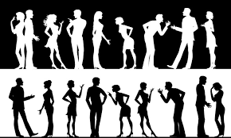

Типирование
Если Вы хотите протипироваться, то обращайтесь к Елене
Сиротенко. Для типирования могут понадобиться ваши фотографии! Основа типирования - модель А, признаки
Рейнина, квадровые ценности и другие теоретические и практические наработки.
|  |